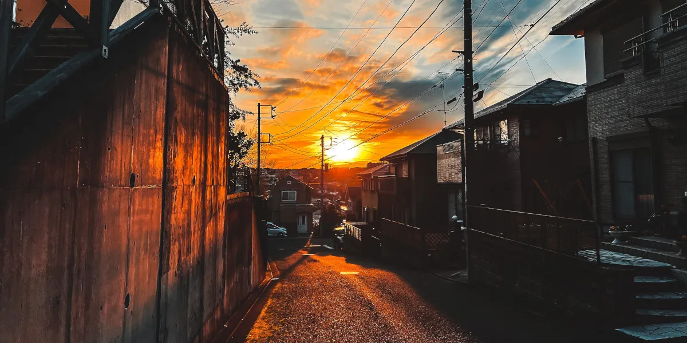
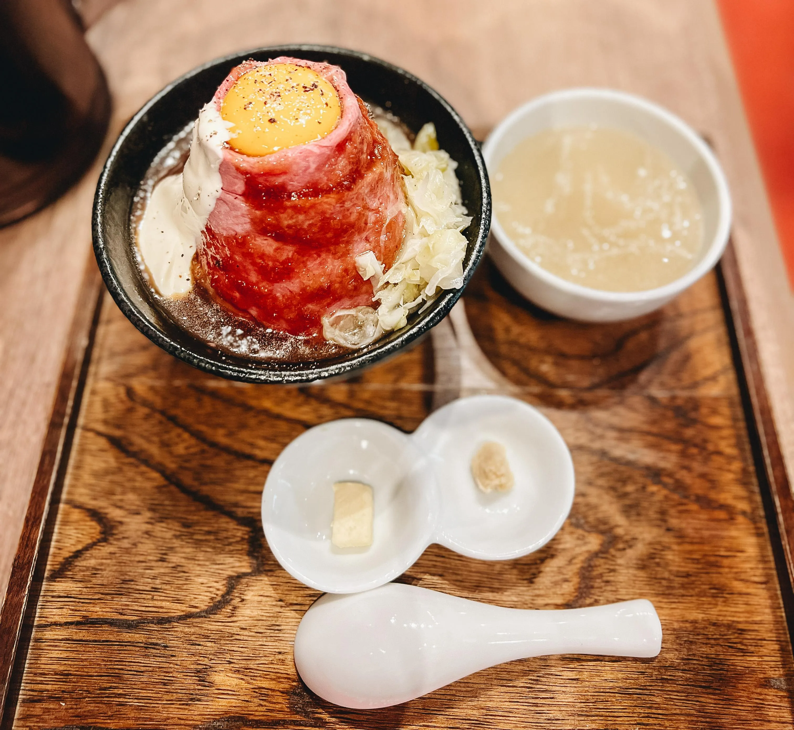
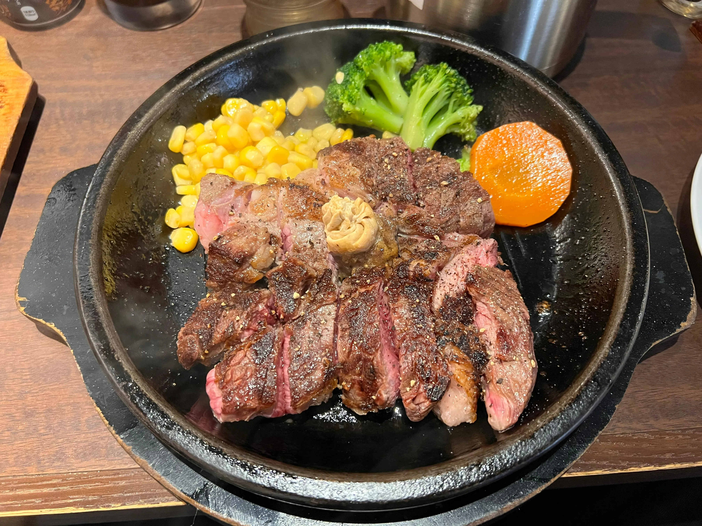
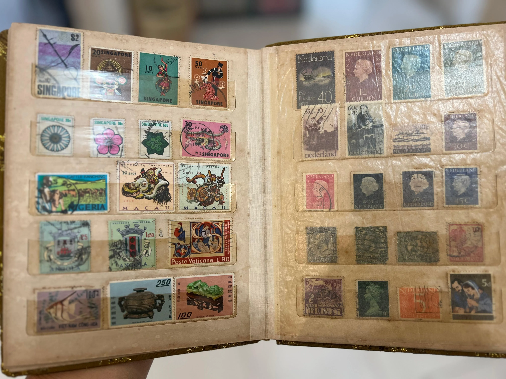

ALFONSUS FERDINAND NORBERT (アルフォンスス フェルディナンド ノルベルト)
夜中に歩いて景色を楽しむこと、心の安らぎを見つけるために。これは日本でしかできないですね。インドネシアはそんなに安全じゃないから。
我慢強いと思います。マー一般的な滅多に怒らない男だね。
粘り強くて、きまったことが最後までにきちんと果たすこと（？）。分かりません ._."
何もハマってないですね。多分、部屋の掃除とインテリアに少しハマっているかな。家に帰るときに気持ちよく感じたいからです。
原宿にある「ローストビーフ大野」の黒毛和牛丼定食。その美味しさが言葉で表せないほど美味しいです～

ステーキ！ミディアムレアの焼き加減は最高です～

ブロッコリー。ブロッコリーはヤバイ、全然食べられません。少しでも口に入ったら、すぐ吐きそうな感じを感じてる。
シャワーを浴びます。シャワーを浴びた後のサッパリした感じが最高です～
パジャマを着替えて、ベッドの上にゴロゴロする。
6時間。毎日早くて夜12.30時寝ます。
1時間前です。8時出発で7時起きることにする。コーヒーを淹れて、歯を磨いて、シャワーを浴びます。
私の口癖はなんかいつも変わっている。今は「o my god」。前はベトナム語の悪口の「du ma」です。ベトナム人の友達から感染された。
笑顔ですね。人の笑顔を見たら、心がポカポカになるから。
全部貯金します。
Everyday, stand guard at the door of your mind.日本語で「毎日、心の扉の前に立ち、見張りをしなさい」。自分の思考や意識に何を取り入れるかについて、警戒することの重要性を強く思い出させるもの。
大学の工学部に入ったが、でも事情があったため、中退してしまいました～
古い切手を集めます～ 今はもうあんまりやってないけど。

私は O 型です。面白いなことに、私の家族は皆 O 型です～
分からないな。今は一人旅が好きなので、前世は旅人かも。
スーパー普通の人。合ってると思います、私あんまり目立つしたくないんだから。